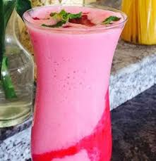

Moscow Mule Recipe

Chef: Shatbhi Basu, STIR Academy of Bartending Recipe Servings: 1 Prep Time: 05 Minutes Cook Time: 10 Minutes Total Cook Time: 15 Minutes Difficulty Level: EasyAbout Moscow Mule
Bursting with flavours of ginger and lime, refreshing and crisp, this elixir will be your new go-to cocktail.
Ingredients Of Moscow Mule:45 ml of vodka 15 ml of lime juice 30 ml of ginger lime cordial 2 wedges of lime 7Up/Sprite & soda to top
How to Make Moscow Mule
- Pour vodka, lime juice, ginger lime cordial in a copper mug full of ice.
- Top it off with half soda, half 7 up or sprite.
- Stir and garnish with a cucumber stick and fresh mint.
Mango And Peach White Iced Tea
Chef: Aashna Ahuja Recipe Servings: 2 Prep Time: 05 Minutes Cook Time: 30 Minutes Total Cook Time: 35 Minutes Difficulty Level: EasyAbout Mango and Peach White Iced Tea
Step up your iced tea game this summer, with this delicious blend of mango and peach.
Ingredients Of Mango And Peach White Iced Tea:10 glasses of purified water 5-6 of white tea bags 2 peaches (pitted and diced) 1 cup of mango (chopped) 1 tbsp honey (optional)
How to Make Mango and Peach White Iced Tea
Pina Colada Recipe
Chef: Vijay Prakash Recipe Servings: 1 Prep Time: 05 Minutes Cook Time: 10 Minutes Total Cook Time: 15 Minutes Difficulty Level: Easy
About Pina Colada
A mixture of rum, coconut water, cream, pineapple juice and sugar syrup. Cool down with this tropical favourite.
Ingredients Of Pina Colada:30ml malibu rum 30ml white rum 60ml fresh coconut water 30ml sugar syrup 60ml pineapple juice 20gm coconut cream pineapple, orange and maraschino cherry for garnishing
How to Make Pina Colada
- Put all the ingredients in a blender
- Blend it well
- Serve in tabu tikki glass with ice cubes (5-6)
- Garnish with fresh pineapple, orange and maraschino
Virgin Cucumber Cooler Recipe
Chef: NDTV Food Recipe Servings: 1 Prep Time: 05 Minutes Cook Time: 10 Minutes Total Cook Time: 15 Minutes Difficulty Level: EasyAbout Virgin Cucumber Cooler Recipe:
Use the favourite summer veggie to make a refreshing mocktail. The citrus note of lemon combined with the fizz of soda gives it a delightful spin. Serve garnished with mint.
Ingredients Of Virgin Cucumber Cooler300 Gram Fresh cucumber 15 Ml Lemon juice 150 Gram Ice (crushed) Soda 1 sprig Mint or basil (for garnish)
How to Make Virgin Cucumber Cooler
- Mix all the ingredients ?in a shaker.
- Pour into a glass and top it up with soda.
- Add mint or basil for garnish.
Key Ingredients:
Fresh cucumber, Lemon juice, Ice (crushed), Soda, Mint or basil (for garnish)
Homemade Ginger Ale
Chef: Shashank Sharma Recipe Servings: 1 Prep Time: 05 Minutes Cook Time: 10 Minutes Total Cook Time: 15 Minutes Difficulty Level: Easy
About Homemade Ginger Ale
Do you like ginger ale? Here is a super-quick recipe to make it at home. The freshness of mint juice, lemon juice and ginger are sure to beat the summer blues.
Ingredients Of Homemade Ginger Ale:
30ml mint juice (method follows) 15ml ginger juice 20ml lemon juice 15ml sugar syrup Sprite or 7Up Sprig of mint
How to Make Homemade Ginger Ale
- To make the mint juice, take mint leaves and ice and blend the two. Strain out the juice.
- To make ginger juice, use ginger and a little bit of water and blend it
- Mix mint juice, ginger juice, lemon juice, and the sugar syrup in a tall glass.
- Top it up with Sprite or 7Up. Garnish with a spring of mint.
- Serve chilled.
Strawberry & Guava Smoothie Recipe
Chef: NDTV Food Recipe Servings: 1 Prep Time: 05 Minutes Cook Time: 10 Minutes Total Cook Time: 15 Minutes Difficulty Level: Easy
About Strawberry & Guava Smoothie Recipe/ Smoothie Recipe :
Blend up some refreshment with a creamy strawberry & guava smoothie. Kids definitely love this smoothie.
Ingredients Of Strawberry & Guava Smoothie
6-8 Fresh strawberries 1 Pink guava juice 1 glass Milk 1 1/2 Tbsp Honey To taste Sugar ice cubes
How to Make Strawberry & Guava Smoothie
- Slice the strawberries (or add any fruit of your choice).
- Add real pink guava juice, milk, honey and some ice cubes.
- Blend all the ingredients together. Pour it in a glass and serve it chilled.
Key Ingredients:
Fresh strawberries, Pink guava juice, Milk, Honey, Sugar, ice cubes
Beetroot Soup Recipe
Recipe Servings: 4 Prep Time: 10 Minutes Cook Time: 25 Minutes Total Cook Time: 35 Minutes Difficulty Level: Easy
About Beetroot Soup
Healthy and hearty soup of beetroot and bottle gourd, tastes good hot or cold.
Ingredients Of Beetroot Soup:
1 cup beet root - peeled and chopped 1 cup bottle gourd (ghiya) - peeled and chopped 1/2 cup chopped onion 1/2 cup chopped tomato 1/2 cup potato - peeled and chopped 1/2 tsp sugar Salt - to taste 1/4 tsp powdered black pepper Cream Chopped coriander leaves - for garnishing
How to Make Beetroot Soup
- Place the beetroot, bottle gourd, onion, tomato and potato with two cups of water in a pan.
- Bring to a boil and then simmer till all the vegetables are soft.
- Cool and blend in a blender. Strain through a sieve.
- Add sugar, salt and black pepper.
- Serve hot or chilled garnished with the cream and coriander leaves.
Chocolate Hazelnut Milkshake Recipe
Chef: NDTV Food Recipe Servings: 1 Prep Time: 10 Minutes Cook Time: 15 Minutes Total Cook Time: 25 Minutes Difficulty Level: Easy
About Chocolate Hazelnut Milkshake Recipe / Milkshake Recipe:
A creamy concoction with flavours of chocolate, cocoa powder and hazelnut.
Ingredients Of Chocolate Hazelnut Milkshake1 Cup cocoa powder 2 Tbsp hazelnut paste 1 Cup cream 1 Cup milk Chocolate for garnish Some nuts like hazelnut or almonds- whatever available
How to Make Chocolate Hazelnut Milkshake
- Add cocoa powder, hazelnut paste, cream, a little milk and some ice cubes.
- Blend all the ingredients together.
- Pour the concoction in a glass. Garnish it with some chocolate shavings and few nicely sliced hazelnuts or almonds.
RECIPE NOTES:
You can add vanilla ice cream in it.
Key Ingredients:
cocoa powder, hazelnut paste, cream, milk, Chocolate for garnish, Some nuts like hazelnut or almonds- whatever available
Grape Nectar Recipe
Chef: Shashank Sharma, The Oberoi Recipe Servings: 1 Prep Time: 05 Minutes Cook Time: 10 Minutes Total Cook Time: 15 Minutes Difficulty Level: Easy
About Grape Nectar
A sweet and tangy mixture of grape juice, lemon chunks and lychees. Overcome the summer heat with this cool mocktail.
Ingredients Of Grape Nectar
6 lychees 6 lemon chunks 20ml sugar syrup Crushed Ice A bunch of fresh black grapes (to yield about 120ml of juice)
How to Make Grape Nectar
- Muddle the lychees along with the lemon chunks.
- Make about 120 ml of juice with the black grapes, but don't throw away the pulp.
- In an old fashioned glass, add the muddled fruits, and sugar syrup and crushed ice.
- You can use a shaker to mix them well. Top it up with the fresh grape juice.
- Muddle two of the mulberries, half of lime and one orange wedge. Add the grape juice, kala khatta syrup, Black salt to taste and stir.
- Serve over crushed ice
- Garnish with pomegranate, the remaining mulberries, and lime rings.
- Shake with ice and pour entire contents into a tall glass.
- Top with soda.
- Garnish with a slice of pineapple and a cherry.
- Extract the apple juice along with the ginger.
- Put the juice, dalchini, salt and black pepper in a pan and bring to a boil.
- Simmer for 2-3 minutes to infuse the flavors.
- Divide the pudina and julienne ginger into four cups, and strain the hot liquid over it.
- Add a few drops of lemon juice and serve.
- Fill a tall glass (traditionally with a stem) with hot boiling water, leave to stand and then pour away the water.
- Whip the cream until the bubbles disappear and it has just started to thicken and form ribbons underneath the whisk. Put back in the refrigerator.
- Dissolve the sugar in 2 tablespoons of hot water in a small pan and bring to a boil. Add some freshly brewed rich coffee and stir. Then remove from heat and stir in the whisky.
- Pour the mixture of whisky, sugar and coffee into the bottom of the pre-heated glass.
- Take the cold cream out of the fridge, whisk once again, then pour it on over the back of a spoon (to prevent it from sinking) until you hit the rim of the glass.
- Grate a little nutmeg over the top and serve immediately. RECIPE NOTES:
- Pour milk in a jug, add sugar and mix well with rose syrup.
- Pour the mixture in a blender.
- Add 1 scoop of rose petal ice-cream and blend the ingredients.
- Pour the blended mixture in a serving glass, and chill for 30 minutes.
- Add a scoop of rose petal ice cream at the time of serving.
- At base of glass add Arrak and pour drink on top of it.
- Garnish with fresh rose petals.
Very Berry Khatta Recipe
Chef: Pranav Mody Recipe Servings: 1 Prep Time: 05 Minutes Cook Time: 10 Minutes Total Cook Time: 15 Minutes Difficulty Level: Easy
About Very Berry Khatta
Enjoy the tangy notes of mulberries, lime, orange, grape juice and kala khatta in this refreshing beverage.
Ingredients Of Very Berry Khatta:4 mulberries 1 orange wedge 60ml grape juice 30ml kala khatta syrup 2 lime rings Black salt Pomegranate Crushed ice
How to Make Very Berry Khatta
Rum Punch Recipe
Chef: Niru Gupta Recipe Servings: 1 Prep Time: 10 Minutes Cook Time: 10 Minutes Total Cook Time: 20 Minutes Difficulty Level: EasyAbout Rum Punch
Pineapple, lemon and peach juice come together along with a dash of rum to stir up one of the most tantalizing cocktails.
Ingredients Of Rum Punch
50 Ml Rum 25 Ml Lemon juice 200 Ml Pineapple juice 100 Ml Peach juice 12.5 Ml Sugar syrup 2 dash Angostura Bitters soda water
How to Make Rum Punch
Key Ingredients:
Rum, Lemon juice, Pineapple juice, Peach juice, Sugar syrup, Angostura Bitters soda water
Hot Apple Punch Recipe
Chef: Niru Gupta Recipe Servings: 2 Prep Time:30 Minutes Cook Time: 15 Minutes Total Cook Time: 15 Minutes Difficulty Level: Easy
About Apple punch
A light and warm apple flavored drink to slurp on a chilly day.
Ingredients Of Hot Apple Punch
4 (500 gm) apples, medium 1 Tbsp ginger, coarsely chopped 1/b tsp dal chini (cinnamon), broken 1/2 tsp salt or to taste 1/4 tsp pissi kali mirch (black pepper) Lemon juice to taste 2 Tbsp pudina (mint) leaves Ginger, julienned to taste (optional)
How to Make Hot Apple Punch
Irish Coffee Recipe
NDTV Food Chef: Aashna Ahuja Recipe Servings: 1 Prep Time: 20 Minutes Cook Time: 20 Minutes Total Cook Time: 40 Minutes Difficulty Level: Easy
Irish coffee is a bewitching combination of sweet, whisky-laced coffee through softly-whipped cream. Very simple, very indulgent, very delicious.
Ingredients Of Irish Coffee
50 Ml Unsweetened Cold Whipping Cream 2 Tbsp Soft Brown Sugar 50 Ml Irish Whisky 1 Cup Freshly Brewed Coffee To sprinkle Nutmeg (optional)
How to Make Irish Coffee
You can also serve the Irish Coffee with whipped cream garnished on top along with nutmeg.
Rose & Arrak Mastani

Chef: Prasad Metrani - Fairmont Jaipur Recipe Servings: 1 Prep Time: 05 Minutes Cook Time: 40 Minutes Total Cook Time: 45 Minutes Difficulty Level: Easy
About Rose & Arrak Mastani
A rich creamy essence made of milk, rose syrup, rose petal ice cream, arrak and rose petals makes for a great dessert beverage. A lavish, thick rose shake is going to be your new favourite for the season.
Ingredients of Rose & Arrak Mastani
2 Cups Milk (chilled) 3 Tbsp Sugar 1/2 tsp Rose syrup 2 scoops Rose petal ice cream 20 Ml Arrak (fennel flavored Arabic drink) For garnishing Fresh rose petals
How to Make Rose & Arrak Mastani
Key Ingredients:
Milk (chilled), Sugar, Rose syrup, Rose petal ice cream, Arrak (fennel flavored Arabic drink), Fresh rose petals